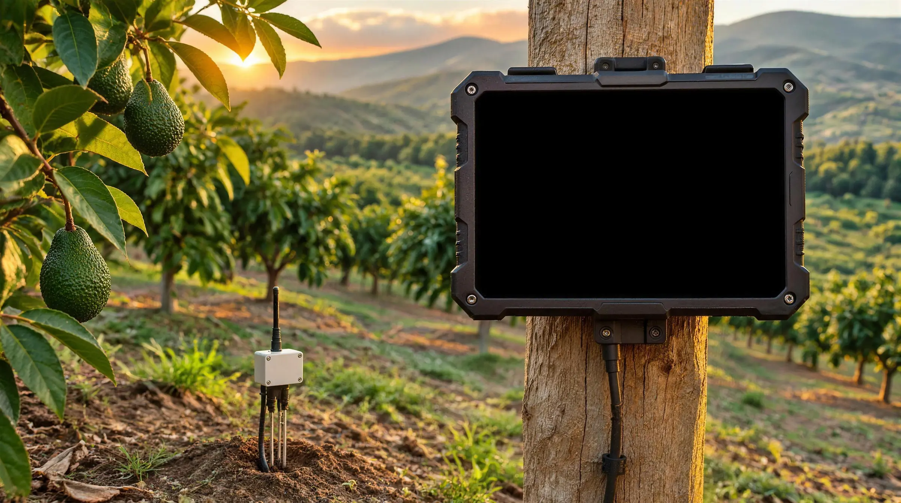

Agritech & Water Precision
Precision technology for farms, greenhouses and botany
Complete farm management platform with a deterministic FAO-56/CROPWAT water balance engine, livestock and IoT telemetry.

Complete control of your production ecosystem
Designed to fit large farms, high-tech greenhouses, livestock herds and botanical collections.
CROPWAT water balance
Deterministic calculation of crop evapotranspiration (ETc = ET0 × Kc), total and readily available water (TAW/RAW), and exact volumetric irrigation prescription.
Field crops and greenhouses
Hierarchical spatial structure: ranches, sectors, houses and beds. Control of planting, densities, phenology, substrates and N-P-K fertilization.
Livestock herd
Health control, ID ear tags, dynamic weighing, genealogy, vaccination calendar and strict withdrawal period tracking.
IoT telemetry and sensors
Continuous monitoring of soil moisture probes at multiple depths, ambient temperature, electrical conductivity (EC) and pH.
Botany and nurseries by QR
Individual identification of botanical specimens, orchids, bonsai and mother plants with QR-coded traceability records.
AI diagnostics
Intelligent models for early detection of pests and nutrient deficiencies, with automatic fertilization recommendations.
FAO-56 water balance
Irrigate when the soil asks for it.
Every day the crop uses water. Once the soil drops below the threshold, it is time to irrigate. Try the calculation in this simulation; the values are examples.
In your business
This is how it looks out in the field.
The tablet stands up to sun and dust, and the moisture sensors report to it over LoRaWAN even without internet. Tap a view to see it on the screen.

Agronomic engineering on screen
Real screenshots of Agro-Cria Pro in the field: continuous LoRaWAN telemetry, Penman-Monteith balance and plant vigor maps.
Satellite Mapping & FAO-56 Balance
Spectral monitoring with sector boundaries, fertigation main valve control and exact water prescription calculated with Penman-Monteith.

Root Dynamics & Microclimate
Continuous reading of SDI-12 capacitive sensors at 15, 45 and 75 cm, global solar radiation in W/m² and vapor pressure deficit to prevent stomatal stress.
Enterprise-grade modular architecture
Agro-Cria Pro runs on a relational data model of 23 specialized modules, validated for local SQLite and enterprise PostgreSQL:
Multi-company, soil profiles, water sources, computerized fertigation systems, input inventory, weather history and task assignment for field crews.
Native multiplatform
Built with Kotlin Multiplatform and Compose Multiplatform for flawless native performance on any device.
Desktop (Windows & Linux)
Complete dashboard for workstations and control rooms. Native installers for Windows (.msi / .exe) and Linux (.deb / .rpm).
Tablets and mobile devices
Touch app designed for use in the field or inside the barn, capturing readings, ear tags and phenology photos with no connection.
Cloud sync
Automatic real-time consolidation when the device regains coverage, so management always has up-to-date data.
Adoption and implementation plans
Flexible solutions from family ranches to agribusiness corporations.
Grower
Ideal for independent ranches, orchards and nurseries.
Up to 3 users and 2 growing zones
- CROPWAT water balance engine
- Crop and phenology records
- Mobile app with offline mode
- Email and WhatsApp support
Agribusiness
For high-tech operations with irrigation and livestock.
Unlimited users and zones
- Integration with probes and IoT telemetry
- Complete livestock herd module
- AI phenological and nutritional diagnostics
- Exportable reports for certification
- Priority support and training
Dedicated server
Permanent local installation for research centers or corporations.
Local infrastructure or private cloud
- Code and database on your servers
- Integration with irrigation PLCs and weather stations
- Agronomic audit and formula calibration
- 24/7 maintenance and support plan
Frequently asked questions
What people ask most about Agro-Cria Pro.
Does it work in the field without signal?
Yes. The touch app captures readings, ear tags and photos offline and syncs on its own when coverage returns; the moisture sensors report over LoRaWAN.
What devices does it run on?
The dashboard installs on Windows and Linux, and the touch app runs on Android and iOS for work in the plot or the barn.
How does it work out how much to irrigate?
With the FAO-56 (CROPWAT) water balance: it computes crop evapotranspiration, the soil’s available water and the exact irrigation depth.
Does it work for livestock too?
Yes. It tracks health records, ear tags, weighing, genealogy, vaccination schedules and withdrawal periods.
What size of operation is it for?
From independent ranches, orchards and nurseries to agro-industrial corporations, with on-premises installation for research centers.
Does it connect to my irrigation equipment?
The Dedicated server plan includes integration with irrigation PLCs and weather stations.
We couldn’t find that question. Write to us and we’ll answer.
Transform how you manage your farm operation
Book a technical demo with our software engineering and agronomy specialists.
Call or email us to schedule your demo: